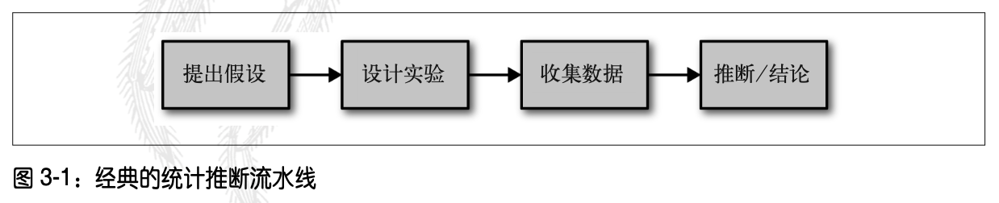
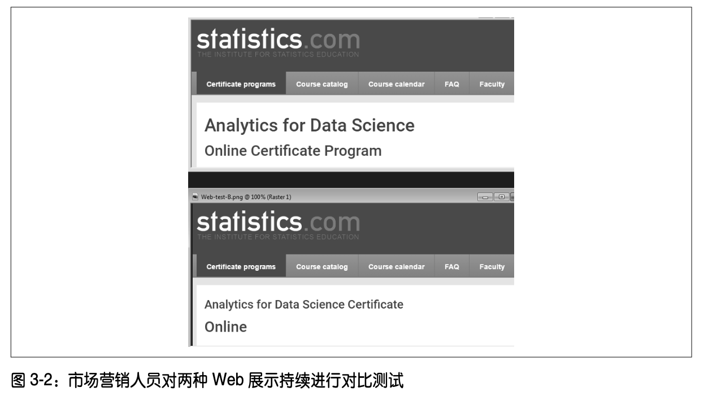

实验设计是统计学实践的基石，几乎所有的研究领域都要用到实验。实验设计的目标是设 计出能确认或推翻某个假设的实验。数据科学家需要开展连续的实验，尤其是与用户界面 和产品营销相关的实验。
如果看到统计显著性、t 检验或 p 值等概念，这一般是在经典统计推断“流水线”的场景 下(如图 3-1 所示)。统计推断过程开始于某个假设，例如，“药物 A 要好于现有的标准药 物”“价格 A 比现有的价格 B 更有利可图”。实验(例如 A/B 测试)是设计用于验证假设 的，我们希望所设计的实验能得出结论性的结果。实验中会收集并分析数据，进而得出结 论。推断(inference)一词反映了这样一个意图:将从有限数据集上得到的实验结果应用 于更大的过程或总体。

A/B 测试将实验分成两个组开展，进而确定两种处理、产品、过程等中较优的一个。在两 组实验中，一般会有一组采用现有的标准处理，或者是不执行任何处理，称为对照组，而 另一组称为实验组。实验中的一个典型假设是实验组要优于对照组。
主要术语：
实验对象所接触的东西，例如药品、价格、Web 标题等。 实验组
执行特定处理的一组对象。
执行标准处理或不执行处理的一组对象。
随机地分配实验对象以进行处理的过程。
接受处理者，例如 Web 访问者、病人等。
用于检验处理效果的度量。
A/B 测试的结果易于测量，因此被广泛地用于 Web 设计和营销中。下面列出了一些使用 A/B 测试的例子。

A/B 测试有对象，对象会分配给两组处理中的一组。对象可能是一个人、一种植物种子 或一位 Web 访问者。注意，对象需要接受处理。在理想情况下，对象是随机指定(即随 机分配)给一组处理的。这样，两个实验组之间的任何差异，只可能是由下面两个因素 所导致的。
在 A/B 测试中，我们也需要关注比较 A 组和 B 组时使用的检验统计量(即度量)。在数据 科学中，最常用的度量可能是二元变量，例如点击或未点击，购买或不购买，作弊或未作 弊，等等。我们可以将比较结果归纳为一个 2×2 的表格。表 3-1 给出了实际价格测试结果 的一个 2×2 的表格。
在比较中所使用的度量，可以是连续变量(例如购买数量、利润等)，也可以是计数(例 如住院天数、访问的页面数量)。两者的结果显示存在着差异。如果关注的并非点击广告 的转化情况，而是每次页面浏览的收益情况，那么在常见的软件输出中，表 3-1 的价格测 试结果大致如下。
Revenue/page-view with price A: mean = 3.87, SD = 51.10 Revenue/page-view with price B: mean = 4.11, SD = 62.98
结果中的 SD 表示的是各组中值的标准偏差。
一些统计软件(包括 R 在内)会默认生成输出，但不能因此认为所有的输 出信息都是有用的，或是与结果相关的。我们可以看到，上面给出的标准偏 差就并非十分有用。它们表明数据中可能存在大量的负值，但我们知道，收 入值是不可能为负的。这是由于数据集由少量较大的值(表示点击转化为购 买)以及大量的零值(表示点击未转化为购买)组成。此类数据的变异性很 难用单个数字总结。相对于标准偏差而言，更合理的度量是偏离均值的绝对 偏差均值(A 组是 7.68，B 组是 8.15)。
这是因为，如果没有对照组，就不能确保“其他条件均一样”，也不能确保所有差异的确 是由处理(或偶然)导致的。除了处理，对照组与处理组具有相同的条件。如果我们只对 比“基线”或先前的经验，那么除了处理，可能还有其他一些因素存在差异。
单盲研究和双盲研究
在单盲研究中，实验对象本身并不知道自己接受的是处理 A 还是处理 B。如果 对象知道自身所接受的处理，那么会对响应产生影响。双盲研究是指研究者和 协助者(例如医学研究中的医生和护士)都不知道哪个对象接受了哪种处理。如 果处理是公开透明的，则盲测是不可行的，例如电脑与心理学家间的认知疗法。
在数据科学中，A/B 测试常用于 Web 领域，其中的处理可以是网页的设计、产品的价格、 标题用语等。我们需要思考如何遵守随机化的原则。通常，实验对象是 Web 访问者，所关 注的结果是点击数、购买、访问时长、访问的页面数量、某个页面是否被访问等。在标准 的 A/B 测试中，需要预先确定一个度量。我们可能需要采集多种行为度量，而且这些度量 可能是我们所关注的。但是，如果如果希望实验能在处理 A 和处理 B 这两者之间做出一个 决策，那么就需要预先确立一个度量，即检验统计量。如果在实验开展后再去选择某个检 验统计量，这无疑会引入研究人员的一些偏好。
A/B 测试在营销和电子商务领域十分常见，但并非唯一的统计实验类型。我们还可以加入一些其他类型的实验，也可以对实验对象做重复的测量。例如，一些药物试验存在受试者 (即实验对象)稀缺、成本高且需要不断寻找的问题，因此其实验设计中会有多个终止实验并得出结论的偶然性。
传统的统计实验设计关注的是如何回答有关具体处理的效果的静态问题。对于下面列出的两个问题，数据科学家更关注的是问题 2。
鉴于此，数据科学家采用的是一种相对新颖的实验设计方法，即多臂老虎机算法(参见 3.10 节)。
假设检验也称显著性检验。假设检验的目的是确定一个观测到的效果是否是由随机性(random chance)造成的。
主要术语：
完全归咎于偶然性的假设。
与零假设相反，即实验者希望证实的假设。
在假设检验中，只从一个方向上计数偶然性结果。
在假设检验中，从正反两个方向上计数偶然性结果。
在构建 A/B 测试(参见 3.1 节)时，我们通常会预先构想一个假设，例如假设价格 B 可 能会带来更高的利润。那么我们为什么需要做出一个假设?为什么不能只是查看实验的结 果，然后选择处理结果更好的那一组?
问题的答案在于，人们在思想上倾向于低估天然随机行为的范围。一个典型的例证就是难 以预料极端事件，即黑天鹅事件(参见 2.8 节)。另一个例证是人们倾向于将随机事件曲解 为具有某种显著性的模式。为此，人们提出了统计假设检验方法，目的是使研究人员免受 随机性的愚弄。
曲解随机性
我们可以发现，人们倾向于在实验中低估随机性。让一些朋友构想抛 50 次硬币的结 果，并写下一系列随机的 H(正面朝上)和 T(反面朝上)。然后，让这些朋友实际去 抛 50 次硬币，并记录结果。将真正的硬币抛掷结果和人工生成的结果各放一处。我们 很容易看出哪个结果是真实的，因为真实的结果中会出现一组连续的 H 或 T。在真实 的抛 50 次硬币中，常常能看见五六个连续的 H 或 T。但是，我们大多数人在构想随机 抛硬币的结果时，如果已经连续有三四个 H，就会暗示自己，最好在这里就切换为 T， 这样序列看上去更随机一些。
另外，抛硬币实验也说明了一个问题。如果的确在现实世界中看到了类似于连续出现 6 个 H 这样的事情，例如一个标题比另一个标题好 10%，我们倾向于将其归因于真实 情况，而非巧合。
在一个设计适当的 A/B 测试中，处理 A 和处理 B 之间任何可观测到的差异，必定是由下 面两个因素之一所导致的。
统计假设检验是对 A/B 测试(或任何随机实验)的进一步分析，意在评估随机性是否可以 合理地解释 A 组和 B 组之间观测到的差异。
假设检验使用的逻辑是:“鉴于人们倾向于对异常的随机行为做出反应，并将其解释为有 意义的真实行为，我们要在实验中证明，组间差异要比偶然性可能导致的差异更极端。” 这里包含了一个基线假设，即各个处理是等同的，并且组间差异完全是由偶然性所导致 的。我们称该基线假设为零假设。事实上，我们希望能证明零假设是错误的，并证明 A 组 和 B 组结果之间的差异要比偶然性可能导致的差异更大。
一种实现方式是通过重采样置换过程，对 A 组和 B 组的结果做随机混洗，并反复将数据分配为 规模相近的组，之后查看实验得到的差异与观测差异同样极端的频率。
假设检验本身不仅包括零假设，还包括一个相抵消的备择假设。下面通过一些例子来说明。
• 零假设是“A 组和 B 组的均值间没有差异”，备择假设是“A 不同于 B”(可能更大，也 可能更小)。
• 零假设是“A ≤ B”，备择假设是“A > B”。（self：此处与原文不同。）
• 零假设是“B 不会比 A 大 x%”，备择假设是“B 比 A 大 x%”。
总而言之，零假设和备择假设必须涵盖了所有的可能性。 假设检验的结构取决于零假设的性质。
A/B 测试通常是根据一个已有的默认选项(比如 A)去测试一个新的选项(比如 B)，并且 假定除非证明 B 明显优于 A，否则我们将坚持使用 A。在这种情况下，我们需要一个假设 检验来免受倾向于 B 的偶然性的欺骗。我们并不在意在另一个方向上是否会受偶然性的愚 弄，因为除非能证明 B 更好，否则我们将坚持 A。所以，我们需要一种有方向的备择假设(即 B 比 A 好)。这种情况下，我们可以使用单向(或“单尾”)假设检验。这意味着极端 偶然性只会导致从一个方向上计入 p 值。
如果想要假设检验使我们免受任意方向上偶然性的愚弄，那么备择假设应该是双向的(即 A 不同于 B，它可能更大，或是更小)。在这种情况下，我们要使用双向(或“双尾”)假 设。这意味着极端偶然性导致可以从任意一个方向上计入 p 值。
单向假设检验通常遵循 A/B 决策过程，即需要指定一个选项，并且除非证明另一个选项更 好，否则将指定该选项为“默认”的。然而，包括 R 在内的一些软件的默认输出通常提供 的是双向测试，并且许多统计学家为了避免争议，也会选择更为保守的双向测试。选择单 向还是双向，这是一个让人困惑的问题，但是该问题与数据科学的关系并不大。在数据科 学中，p 值的计算精度并非十分重要。
在统计学中，重抽样是指从观测数据中反复地抽取数据值，目标是评估一个统计量中的随 机变异性。重抽样还可用于评估并提高一些机器学习模型的准确性。例如，对于使用多个 自助数据集构建的决策树模型，可以通过 Bagging 过程计算其平均值。
重抽样过程主要有两种类型，即自助法和置换检验。自助法用于评估一个估计量的可靠性，我们在前面已经做了介绍(参见 2.4 节)。本节将介绍用于检验假设的置换检验，它通 常涉及两组或多组。
主要术语：
将两组或多组样本组合在一起，并将观测值随机地(或穷尽地)重新分配给重抽样。
同义词:随机化检验、随机置换检验、准确检验
在抽样时，所抽取的元素在下一次抽取前是否放回样本中。
置换过程涉及两组或多组样本，通常是 A/B 测试或其他假设检验中的组。置换意味着改变 一组值的顺序。要对一个假设进行置换检验，首先要将从 A 组和 B 组(当然还可以包括其 他组，例如 C、D......)中得到的结果组合在一起。这就是零假设的逻辑，即无论处理指 定给哪个组，都是无差别的。然后，我们从组合集中随机抽取出各个组，并查看组间的差 异情况，实现对假设的检验。置换过程如下。
现在我们回头查看所观测到的组间差异，并与置换差异进行对比。如果观测到的差异位于 置换差异内，那么置换检验的结果并不能证实任何事情，因为观测到的差异落在偶然可能 产生之差异的范围内。但是，如果观测到的差异大部分落在置换分布之外，那么我们就可 以得出“与偶然性无关”这一结论。如果使用专业术语描述，我们称差异是统计显著的(参见 3.4 节)。
代理变量是一种可以代表我们所关注的真正变量的变量。真正关注的变量可 能不可用，也可能度量的成本太高或耗时过长。例如，在气候研究中，远古 冰芯的含氧量被用作温度的代理变量。最好至少有一点关于真正变量的数 据，这样可以评估真正变量与代理变量间的关联程度。
该例子内容详见书籍对应部分。挺不错。
置换检验除了使用前面介绍的随机混洗过程(也称随机置换检验或随机检验)之外，还有两种重要变体:
穷尽置换检验并不是随机混洗并分组数据，而是尝试所有可能的分组。穷尽置换检验只适 用于规模较小的样本。如果做大量的重复混洗，那么随机置换检验的结果会近似于穷尽置 换检验的结果，并在极限上逼近。穷尽置换检验有时也被称为准确检验，因为其统计学属 性确保了零模型不会被检验为比 α 值水平更显著(参见 3.4 节)。
自助置换检验是在置换检验第二步和第三步的抽取中，进行有放回抽样，而非无放回抽 样。这样，重抽样过程不仅建模了随机分配对象给处理的过程，而且建模了从总体中随机 抽取对象的过程。这两个都是统计学过程，但是它们之间的差别过于复杂，因而不被数据 科学实践所关注。
在探索随机变异性中，置换检验是一种十分有用的启发式过程。它很容易编码，也很容易 理解和解释。针对统计学中那些基于公式的形式主义和“假决定论”，置换检验提供了切 实可行的绕行方法。
不同于依赖于统计学公式的方法，重抽样的一个优点在于给出了一种更加近乎于“万能” 的推断方法。它所适用的数据可以是数值，也可以是二元的;样本规模可以相同，也可以 不同;并且无须假设数据符合正态分布。
统计学家引入了统计显著性的概念，用于衡量一个实验(也可以是对已有数据的研究)所生成的结果是否会比随机情况下可能给出的结果更极端。如果生成的结果超出了随机变异 的范围，则我们称它是统计显著的。
主要术语：
对于一个加入了零假设的偶然性模型，p 值指得到与观测结果一样不寻常或极端 的结果的概率。
在实际结果的确是统计显著的情况下，α 值指偶然性结果必须超出的“不寻常性” 概率的阈值。
错误地将一个由随机导致的效果归结为真。
错误地将一个为真的效果归结为由随机导致的。
以表 3-2 为例，表中数据是 3.1 节中 Web 测试的结果。
价格 A 的转化情况比价格 B 好近乎 5%(0.8425% 对比 0.8057%，差异为 0.0368%)。当业 务量很大时，这一差异就会具有显著的意义。一个有超过 4.5 万条数据的集合，完全可以 被视为“大数据”，没有必要做统计显著性检验，统计显著性检验主要针对的是小规模样 本中的抽样变异性。不过我们也能看到，此例中的转化率非常低，甚至小于 1%，以至于 实际有意义的值(即转化)只有数百个。事实上，所需的样本规模取决于转化率。我们可 以使用重抽样，检验价格 A 与价格 B 之间的转化差异是否位于随机变异的范围内。这里所 说的随机变异(chance variation)，是指在概率模型中加入“两者在转换率上不存在差异” 这一零假设后，由模型生成的随机变异性(参见 3.2.1 节)。下面我们给出一个置换过程， 该过程的目的是要回答如下问题:“如果两种价格具有相同的转换率，那么随机变异的方 差能否产生 5% 的差异?”
(1) 将所有的样本结果置于同一个桶中。同一个桶表示假定两种价格具有相同的转换率。在 本例中，我们有 200 + 182 = 382 个 1，23539 + 22406 = 45945 个 0，这样转换率为 382/ (45945 + 382) = 0.008246 = 0.8246%。
(2) 在桶中做随机混洗，并从中抽出规模为 23 739(与价格 A 的 n 值相同)的重抽样，记 录抽样中 1 的个数。
(3) 记录桶中余下 22 588(与价格 B 的 n 值相同)个数据点中 1 的个数。
(4) 记录两者中 1 的比例在百分位数上的差异。
(5) 重复第 2 步到第 4 步多次。
(6) 计算其中差异大于或等于 0.0368% 的频数。
在衡量统计显著性时，简单地查看绘图并不是一个非常精确的方法，人们更关注的是 p 值。p 值表示随机模型生成的结果比观测结果更极端的频数。在估计置换检验的 p 值时， 我们可以采用置换检验中生成大于或等于观测差异值的检验次数所占的比例。
完全根据研究人员的判断力去确定一个结果是否“太不寻常”因而是偶然的，统计学家无 疑会对此做法大皱眉头。在统计学家看来，正确的做法是提前设定一个阈值，例如“超过 随机(零假设)结果 5%”。这样的阈值被称为 α 值。α 值的常见取值是 5% 和 1%。α 值的 选取具有一定的随意性——该过程无法确保在 x% 的情况下做出正确的决策。原因在于我 们要回答的概率问题并不是“随机发生的概率是多少”，而是“给定一个随机模型，出现 极端结果的概率是多少”。这样我们需要对随机模型的适当性进行逆推，但是在判断过程 中没有任何可依据的概率。这个问题一直困扰着统计学家。
p值的意义：
近年来，对 p 值的使用一直存在着相当大的争议。
更多内容详见书籍。
在评估统计显著性时，可能会出现下面两种类型的错误。
事实上，第二类错误并不是一种错误，它是由于判断样本的规模过小，而无法检测到效 果。如果 p 值不足以表明统计显著性(例如，超过 5%)，我们应称其为“效果未验证”。 增大样本的规模，可能会生成较小的 p 值。
显著性检验(即假设检验)的基本功能就是防止我们被随机性愚弄。因此，我们通常可以 通过构造显著性检验去最小化第一类错误。
数据科学家所做的工作一般并不会发表在科学期刊上，因此对 p 值意义的辩论是颇具学术 性的。如果数据科学家想知道一个看上去有意义并且有用的模型结果是否落在随机变异的 范围内，p 值是一种有用的指标。作为一种在实验中使用的决策工具，p 值不应被视为一 种决定性的因素，而应被视为是另一种可以辅助决策的信息。 例如，有时可以将 p 值作为 一些统计学或机器学习模型的中间输入值，根据 p 值决定一个特征应该包含在模型中，还 是应该从模型中排除。
显著性检验具有多种类型，具体取决于数据集是计数数据还是测量数据、所具有的样本 数量以及测量的具体内容。t 检验是其中一种十分常用的检验。t 分布用于估计单个样本均值的分布情况。
主要术语：
对我们所关注的差异或效果的度量。
归一化的检验统计量。
一种用于比较所观测到的 t 统计量的参考分布。对于 t 检验，参考分布是从零假 设生成的。
所有的显著性检验都要求指定一个检验统计量去测量所关注的效果，并确定观测到的效果 是否落在随机变异的范围内。在重抽样检验(参见 3.3.1 节对置换的介绍)中，数据的规 模并不是十分重要。我们从数据本身创建参考(零假设)分布，并据此使用检验统计量。
统计假设检验形成于 20 世纪 20 年代和 30 年代，当时无法做到对数据随机混洗数千次， 以用于重抽样检验。但是统计学家发现，t 检验很好地近似了置换(随机混洗)分布。t 检 验基于格赛特提出的 t 分布，可以在十分常见的两个样本的比较(即 A/B 测试)中使用， 只要样本中的数据是数值型的。但是在使用 t 分布时，为了排除规模因素的影响，必须对 检验统计量做归一化处理。
经典的统计学教材在介绍 t 检验时，会列出多个公式，其中包含了格赛特提出的 t 分布。 还会介绍如何对数据做归一化，以便与标准 t 分布做比较。但是在本书中，我们并不会给 出这些公式，因为这些公式已经包含在 R 和 Python 等统计软件的常用命令中。
主要术语：
错误地得出一个效果是统计显著的结论。
在多重检验中，犯第一类错误的比率。
用于在同一数据上做多重检验。
拟合了噪声。
更多内容详见书籍。
在许多统计检验的文档和设置中，我们都能看到自由度这一概念。自由度应用于从样本数 据计算得到的统计量，指可以自由变化的值的个数。例如，对于一个具有 10 个值的样本， 如果知道了样本的均值以及样本中的 9 个值，那么第 10 个值也是已知的，即只有 9 个值 是自由变化的。
主要术语：
在数据中，观测(也称为行或记录)的数量。
degrees of freedom(自由度)的简写。
自由度是很多统计检验的一个输入。例如，在计算方差和标准偏差时，分母 n-1 就是自由 度。为什么要使用自由度?在使用一个样本估计总体的方差时，如果在分母上使用了 n， 那么估计的偏差就会偏小。如果在分母上使用了 n-1，这时估计就是无偏的。
t 检验、F 检验等各种对假设的标准检验，占据了传统统计学课程或教材的大部分内容。在 传统的统计学公式中，如果使用了经过归一化的样本统计量，自由度就是归一化计算的一 部分，它确保了归一化的数据可以匹配适当的参考分布，如 t 分布、F 分布等。
自由度对数据科学是否也同样重要?答案是并非如此，至少就显著性检验而言并非如此。 一方面，在数据科学中，我们只是保守地使用了正式的统计检验。另一方面，数据的规模 通常会非常大，这使得对于数据科学家来说，分母是 n 还是 n-1 几乎没有区别。
但是在数据科学中，有一种场景是与自由度相关的，那就是在回归(包括逻辑回归)中使 用因子化变量。如果在回归算法中使用了完全冗余的预测变量，那么算法就会产生阻塞。 该问题经常出现在将分类变量因子化为二元标识(虚拟变量)的情况下。以星期为例，虽 然一个星期有 7 天，但具体是星期几，其自由度为 6。一旦我们知道某一天并不是从星期 一到星期六中的任意一天，那么它一定是星期天。因此，如果在回归中包括了星期一至星 期六，就意味着也加入了星期天，而由于多重共线性(multicollinearity)问题，这将导致 回归失败。
如果我们不是要对两个组做 A/B 测试，而是要对比多个包含数值型数据的组(比如 A、B、 C、D)，这时可以使用方差分析(ANOVA，analysis of variance)。方差分析是一种检验多 个组之间统计显著性差异的统计学方法。
主要术语：
对于有多个组的情况，在两个组之间做假设检验(比如对均值)。
一种可以测定多个组均值间方差的单一假设检验。
从整体统计量中(例如，从整体均值、处理均值以及残差中)，分离出单个值的贡献 情况。
一种归一化统计量，用于衡量多个组均值间的差异是否会超过随机模型的预期。
sum of square(平方和)的简写，指与某一均值的偏差。
更多内容详见书籍。
在比较两组的均值时，我们可以使用 t 检验替代置换检验。类似地，对于方差分析而言， 存在一种基于 F 统计量的统计检验。F 统计量基于各组均值间的方差(即处理效果)与由 于残差所导致的方差间的比率。比率越高，结果就越统计显著。如果数据遵循正态分布， 那么根据统计学理论，统计量也应符合某种分布。由此，p 值也是可以计算的。
更多内容详见书籍。
更多内容详见书籍。
通常在 Web 测试中，需要一次检验多个处理，这超出了 A/B 测试的范围。卡方检验适用 于计数数据，它可以检验数据与预期分布的拟合程度。在统计实践中，卡方统计量的最常 见用法是与 r×c 列联表一起使用，以评估对变量间独立性的零假设是否合理。
主要术语：
观测数据偏离预期程度的量度。
在某种假设(通常是零假设)下，我们期望数据能给出的结果。
自由度。
更多内容详见书籍。
更多内容详见书籍。
卡方分布可以很好地近似上面所介绍的混洗重抽样检验过程，但是它并不适用于计数非常 低(达到个位数，特别是少于 5 个)的情况。在这种情况下，重抽样过程本身就能给出更 精确的 p 值。事实上，大多数统计软件都可以实际列出所有可能出现的重排(置换)情 况及其频数，进而确定观测结果的极端程度。这一操作被称为费舍尔精确检验(Fisher’s exact test)。
更多内容详见书籍。
卡方检验的大多数标准用法(以及费舍尔精确检验)，与数据科学的联系并不是十分紧密。 在大多数数据科学实验中，无论是 A/B 测试，还是 A/B/C......测试，实验目标并不是要简 单地确定统计显著性，而是要给出最佳的处理。对此，多臂老虎机算法(参见 3.10 节)可 以给出更完整的解决方案。
在数据科学中，卡方检验(尤其是费舍尔精确检验)的一个应用是确定适当的 Web 实验样 本规模。在此类实验中，尽管具有大量的页面展示，但是点击率通常很低。过小的计数率 可能会导致实验无法得出确定的结论。这时可以使用费舍尔精确检验、卡方检验等检验方 法，计算检验效能和样本规模(参见 3.11 节)。
在科学研究中，一些研究人员广泛地使用了卡方检验，以确定难以捉摸的统计显著性 p 值，进而使自己的研究成果适合发表。在数据科学的应用中，并不是将卡方检验或类似的 重抽样模拟作为正式的显著性检验，而是更多地将此类检验方法作为一种过滤器，用以确 定某个效应或特征是否值得进一步考虑。例如，此类方法可用于空间统计学和映射中，以 确定空间数据是否符合某个指定的零分布，例如集中在某一区域的犯罪率是否大于随机性 所允许的程度。此类方法还可以用于机器学习中的自动特征选择，通过判定各个特性的主 要类是否符合随机变异的范围，即是否存在过高或过低的问题，进而确定特性的主要类。
多臂老虎机算法(multi-arm bandit algorithm)是一种检验方法，尤其适用于 Web 测试。相 比于传统的统计学实验设计方法，它实现了明显的优化，并且能更快地做出决策。
主要术语：
一种假想的老虎机，提供多个拉杆供用户选择，每个拉杆对应不同的收益，用于 模拟多处理实验。
表示实验中的一个处理，例如 Web 测试中的标题 A。 获胜
通过实验模拟老虎机上的获胜，例如客户点击了链接。
传统的 A/B 测试需要根据特定的设计在实验中采集数据，去回答某个具体的问题，例如: “处理 A 和处理 B 哪个更好?”假定一旦问题得到解答，就结束实验，然后继续操作结果。
你可能已经发现，使用这一方法存在几个问题。首先，我们得到的答案并不是结论性的， 即“效果未证明”。换句话说，实验结果可能会表明一个效果，但是我们没有足够的样本去证明所表明的效果，也就无法确定效果是否符合传统的统计标准。这并未回答我们应该 做出什么决策的问题。其次，我们可能希望在实验得出结论前，就开始利用之前获得的结 果。再次，我们希望能根据实验结束后获得的其他数据，去更改我们的决策，或是尝试其 他的事情。传统的实验方法和假设检验方法可以追溯至 20 世纪 20 年代，这些方法是相当 僵化的。随着具有强大计算能力的计算机和软件的出现，我们可以使用一些更强大、更灵 活的方法。此外，数据科学(包括商业)并不十分关注统计显著性，而是更加关注整体工 作和结果的优化。
多臂老虎机算法在 Web 测试中广受欢迎。它可以一次测试多个处理，相比于传统的统计设 计，它能更快地得出结论。该算法以赌博中使用的老虎机命名，也称“单臂老虎机”，因 为该算法在配置上实现了稳定地从赌徒那里掠取金钱。让我们想象一台有多个拉杆的老虎 机，每个拉杆以不同的速率付款，这就是一个多臂老虎机，即该算法全称的由来。
我们的目标是尽可能赢取更多的钱。具体地说，越早识别并确定可以获胜的拉杆越好。但 是挑战在于，我们并不知道各个老虎机拉杆的回报速率，只知道拉动老虎机拉杆的结果。 我们假设无论拉的是哪个拉杆，每次“获胜”将得到相同数额的回报，不同之处只在于获 胜的概率。进一步假设，我们初始尝试拉动每个拉杆 50 次，得到以下结果。
一种极端的做法是:“拉杆 A 看起来像是赢家。因此让我们放弃尝试拉动其他的拉杆，一 直拉动拉杆 B。”该做法充分利用了初始试验的结果。如果拉杆 A 的确更优，我们就可以 尽早从中受益。但另一方面，如果拉杆 B 和拉杆 C 事实上更好，那么我们就会失去发现这 一点的偶然性。另一种极端的做法是:“这看上去完全在随机范围内。让我们继续以均等 的可能性拉动各个拉杆。”这一做法将给予拉杆 A 的替代者们一个充分展示的偶然性。但 是在此过程中，我们的处理看上去并非最优。问题在于这一做法将持续多长时间?老虎机 算法采用了一种混合的方法。一开始，我们更频繁地拉动拉杆 A，充分利用该拉杆初始看 上去更优的结果。但我们并未放弃拉杆 B 和拉杆 C，只是较少地拉动它们。如果拉杆 A 持 续表现优异，我们将继续少拉动拉杆 B 和拉杆 C，而是更频繁地拉动拉杆 A。而如果拉杆 C 的表现开始变好，拉杆 A 的结果开始变糟，这时我们可以减少拉动拉杆 A 的次数，转而 频繁地拉动拉杆 C。如果其中一个拉杆被证明是优于拉杆 A 的，只是由于随机性导致它未 在初始试验中显现出来，那么现在就有偶然性在进一步的检验中得以显现。
一个更复杂的算法使用了汤普森抽样(Thompson’s sampling)方法。我们可以在每个阶段 中做一次“抽样”(拉动拉杆)，以最大化选择最佳拉杆的可能性。当然，我们并不知道哪 个拉杆是最佳的，而问题完全在于此!但是随着每一次连续的抽取，我们都能获得收益， 进而获得更多的信息。汤普森抽样采用了贝叶斯方法。它首先使用 Beta 分布假设回报的 先验分布。Beta 分布常用于指定贝叶斯问题中的先验情况。随着每次抽取信息的累积，通 过更新累积信息，我们就可以更好地优化下一次抽取，直至选取最优的拉杆。
老虎机算法可以有效地应对三种以上的处理，并趋向于最佳选择的方向。对于传统的统计 检验过程而言，三种以上处理决策的复杂性，远远超出了传统的 A/B 测试，因此老虎机算 法颇具优势。
更多内容详见书籍。
更多内容详见书籍。